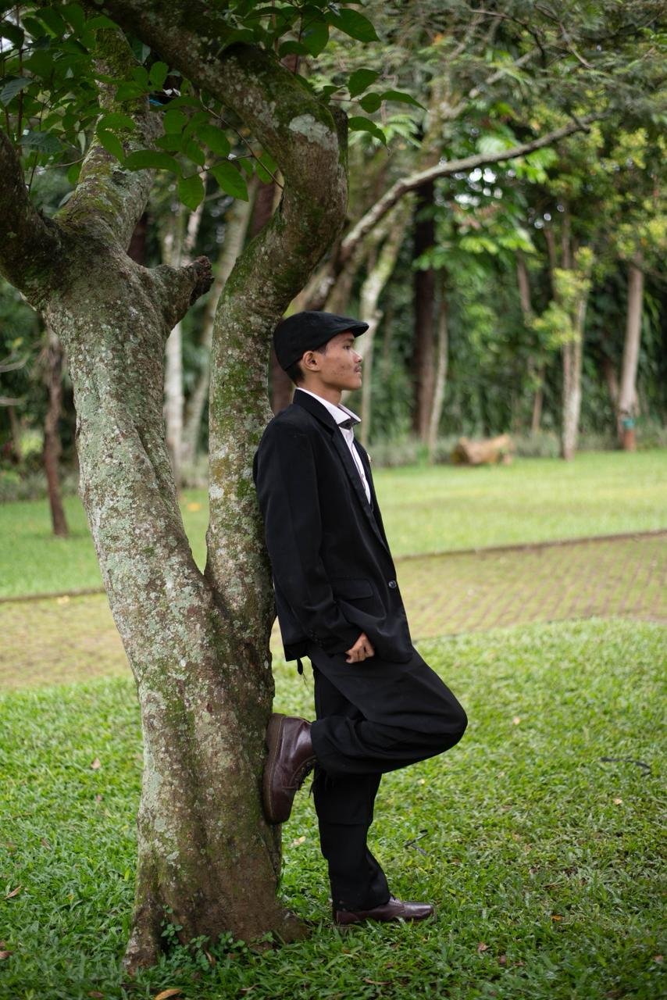
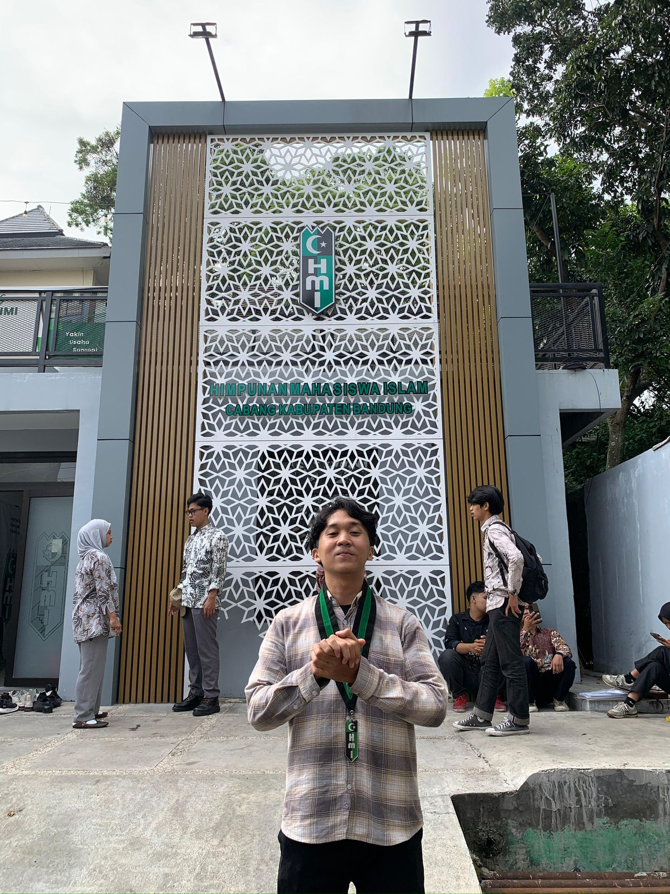
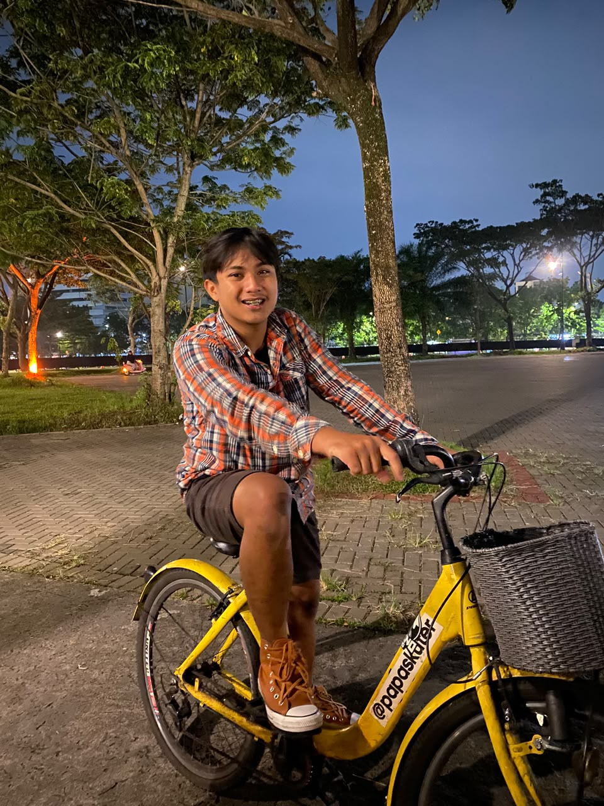

Makaroni Law Firm didirikan tahun 2010 oleh tiga advokat yang sebelumnya memimpin desk korporasi di firma top-tier Jakarta. Kami membawa pendekatan yang berbeda: setiap klien mendapat akses langsung ke partner yang menangani, bukan dialihkan ke junior associate.
Dalam 16 tahun terakhir, kami telah menutup 47 transaksi M&A dengan total nilai lebih dari Rp 12 triliun — termasuk akuisisi lintas batas yang melibatkan yurisdiksi Singapura, Hong Kong, dan Belanda.
Jadwalkan konsultasi awal tanpa biaya — kami merespons dalam 4 jam kerja →Delapan area dimana tim kami memiliki kedalaman yang tidak bisa disamai firma generalis.
Tiga partner yang masih aktif menangani perkara setiap hari.

Memimpin praktik korporasi dan M&A firma sejak pendiriannya. Berpengalaman dalam transaksi lintas batas, joint venture, dan restrukturisasi grup usaha berskala besar.

Mengepalai tim litigasi dan arbitrase. Terdaftar sebagai arbiter di BANI dan berpengalaman menangani sengketa bernilai tinggi di forum pengadilan maupun arbitrase nasional dan internasional.

Memimpin praktik perbankan dan pembiayaan. Spesialisasi dalam pembiayaan proyek infrastruktur, sindikasi kredit, dan restrukturisasi utang korporasi.
"Proses due diligence yang biasanya 6 bulan, tim Makaroni selesaikan dalam 11 minggu tanpa satu pun temuan yang terlewat di tahap closing. Itu yang membuat kami kembali untuk transaksi kedua dan ketiga."
"Di saat tiga firma lain menolak kasus kami karena dianggap terlalu kompleks, Makaroni mengambilnya dan menang di tingkat pertama. Mereka tidak hanya paham hukumnya — mereka paham politik korporasinya."
"Yang membedakan Makaroni dari firma besar lain: saya bicara langsung dengan partner-nya, bukan associate tahun pertama yang masih belajar."
Konsultasi awal 30 menit tanpa biaya. Kami akan memberikan penilaian awal dan rekomendasi pendekatan hukum dalam 4 jam kerja setelah jadwal dikonfirmasi.